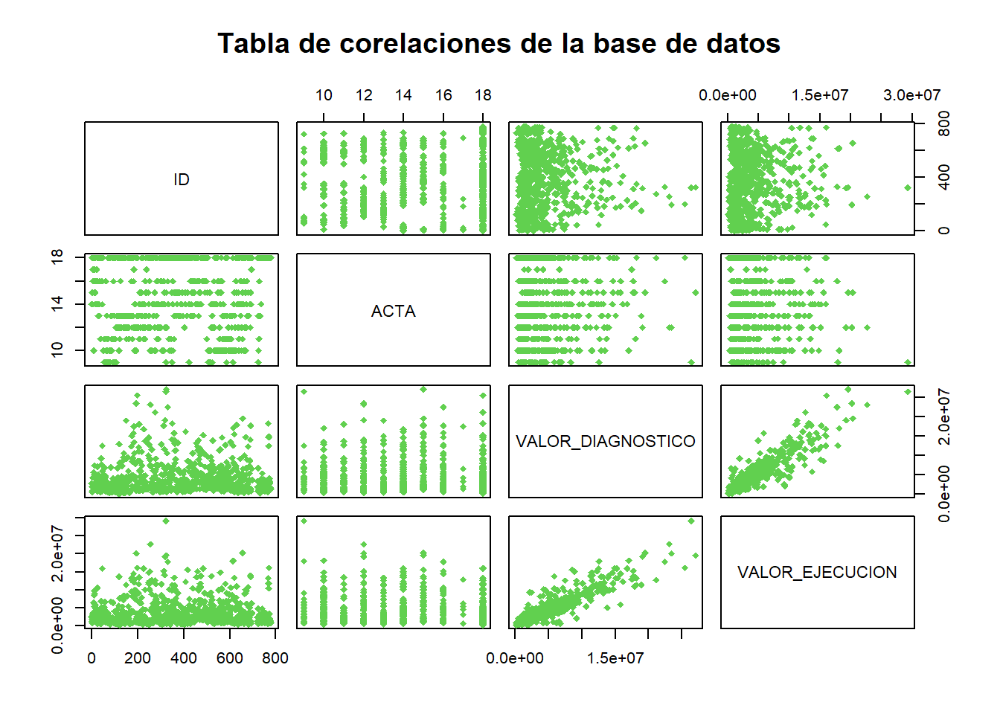

Se aclara que las instituciones de la localidad 20 Localidad de Sumapaz, no fueron intervenidas, al igual que las instituciones de clase ADMINISTRACIÓN
Por lo anterior se hace mas fácil realizar el filtro de las instituciones que tienen un valor diferente de 0 en la variable VALOR_EJECUCIÓN, dejando asi un
DB <- getDatabaseClean("dataset.xlsx", "data", "VALOR_EJECUCION")RESGISTROS ANTES DE LA LIMPIEZA 779
RESGISTROS LUEGO DE LA LIMPIEZA 713
data <- DB$dataEn primera instancia se hace la revision de los registros realizando la búsqueda de datos duplicados que puedan alterar el análisis en la base datos
# Búsqueda de valores duplicados validando la columna ID
bD <- findDatabaseDuplicades("ID", data)VALIDANDO REGISTROS DUPLICADOS DE (ID)
El campo ID continene 713 registros
El campo ID continene 713 registros únicos
No existen registros duplicados
# Búsqueda de valores duplicados validando la columna NOMBRE COLEGIO
bD <- findDatabaseDuplicades("NOMBRE COLEGIO", data)VALIDANDO REGISTROS DUPLICADOS DE (NOMBRE COLEGIO)
El campo NOMBRE COLEGIO continene 713 registros
El campo NOMBRE COLEGIO continene 367 registros únicos
Existen registros duplicados
# Búsqueda de valores duplicados validando la columna SEDE
bD <- findDatabaseDuplicades("SEDE", data)VALIDANDO REGISTROS DUPLICADOS DE (SEDE)
El campo SEDE continene 713 registros
El campo SEDE continene 7 registros únicos
Existen registros duplicados
# Búsqueda de valores duplicados validando la columna CLASE
bD <- findDatabaseDuplicades("CLASE", data)VALIDANDO REGISTROS DUPLICADOS DE (CLASE)
El campo CLASE continene 713 registros
El campo CLASE continene 3 registros únicos
Existen registros duplicados
Al realizar el analisis de los campos principales para la identificacion de los registros, se evidencia que el campo a tener en cuenta es la columna ID ya que este es el unico que asegura que no hay presencia de registros duplicados
Seguido se realiza la eleminacion de resgistros que no aportan para el analisis de las variables mediante una funcion aplicada a la base de datos inicial.
Luego del analisis de registros redundantes se tiene la siguiente tabla en donde se muestran los siguientes valores:
describe(
data[, c('ID', 'VALOR_DIAGNOSTICO', 'VALOR_EJECUCION')],
fast = TRUE) %>% kbl() %>% kable_styling(
bootstrap_options = c("striped", "hover", "condensed", "responsive")
)| vars | n | mean | sd | min | max | range | se | |
|---|---|---|---|---|---|---|---|---|
| ID | 1 | 713 | 379.9888 | 220.2813 | 1 | 779 | 778 | 8.2496 |
| VALOR_DIAGNOSTICO | 2 | 713 | 4419081.3063 | 4291547.8749 | 176110 | 27039763 | 26863653 | 160719.7310 |
| VALOR_EJECUCION | 3 | 713 | 4004079.9795 | 3946613.9151 | 176110 | 29289434 | 29113324 | 147801.8527 |
Se observa que la base de datos cuenta con 713 registros únicos
Se a hallado 66 registros que no cuentan con un presupuesto asignado para la ejecucion de las actividades de demarcacion y señalizacion dentro y fuera de las instalaciones de la Institucion Educativa Distrital
Dado que estos registros no aportan informacion relevante para el caso de estudio estos registros ha sido descartados
Para la identificacion de variables redundantes se empleara el metodo de coeficiente de correlacion
cuanti<-select(
data,
"ID","ACTA",
"VALOR_DIAGNOSTICO", "VALOR_EJECUCION")
head(cuanti) %>% kbl() %>% kable_styling(
bootstrap_options = c("striped", "hover", "condensed", "responsive")
)| ID | ACTA | VALOR_DIAGNOSTICO | VALOR_EJECUCION |
|---|---|---|---|
| 1 | 14 | 2776391 | 2421443.2 |
| 2 | 18 | 1900398 | 1154582.4 |
| 3 | 15 | 1924070 | 1723174.9 |
| 4 | 14 | 589123 | 670999.5 |
| 5 | 18 | 4329138 | 3503002.0 |
| 6 | 17 | 1967335 | 3052744.3 |
pairs(
cuanti, col = '11', pch = 18, main = "Tabla de corelaciones de la base de datos")
Debido a la naturaleza de los datos se evidencia que la variable ID y la variable LOCALIDAD tienen una fuerte corelacion, pero debido a que ID es solo el identificador del registro y es empleada simplemente para determinar la cantidad de filas almacenadas detro de la base de datos, porlo que no se hace necesario prescindir de una de las variables
Tambien se puede observar que VALOR_DIAGNOSTICO y VALOR_EJECUCIO tienen fuerte correlacion, con base en lo anterior se informa que a pesar de presentarse esta correlacion, las variables deben ser tratadas de forma independiente ya que estas cumplen roles importantes en diferentes etapas del proceso de ejecucion del contrato de estudio.